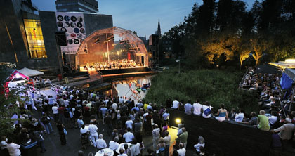

Eerdere edities van Muziek op de Dommel
2014
Het programma van 2014 is hier terug te vinden.
2013
Tijdens het eerste weekend van juni 2013 vond de vierde editite van Muziek op de Dommel plaats. Vanwege het succesvolle zondagprogramma in 2012 kende ook deze editie een bijzonder zondagmiddagconcert. Meer dan 125 gitaristen vormden samen één orkest. Ruim 1500 bezoekers woonden op deze zonnige dag het spaans getinte concert bij.
Ook de zaterdag trok veel bekijks. Zowel de middag als de avond werd gevuld met optredens van diverse lokale ensembles en muziekgezelschappen.
Nieuw in 2013 was het Klassiek Café en de Muziektuin: twee areas waar de muziek in een intiemere sfeer nog meer tot zijn recht kwam. Verschillende workshops zorgden ervoor dat het publiek nu ook actief kon deelnemen aan het programma.
De programma's en alle deelnemers zijn hier terug te vinden. Foto's van Muziek op de Dommel 2013 zijn te bekijken via de fotopagina.
2012
In 2012 werd het programma van Muziek op de Dommel voor het eerst uitgebreid naar 2 dagen. Het zaterdagprogramma bestond uit het inmiddels vertrouwde concept van de vorige 2 edities: Een middag en avond lang optredens van diverse regionale toporkesten, -koren en -ensembles.
De Zondag stond in het teken van Kinderen maken Muziek op de Dommel, waarbij ruim 100 basisschoolleerlingen in de weken voorafgaand aan het festival een concert hebben ingestudeerd op allerlei creatieve muziekinstrumenten. Medewerkers van Fort van de Verbeelding hebben samen met musici van Het Brabants Orkest lessen verzorgd op school. Helaas werd het programma vanwege het slechte weer verplaatst naar de grote zaal van Muziekgebouw Frits Philips. Ondanks dat was het een groot succes.
De programma's en alle deelnemers zijn hier terug te vinden. Foto's van Muziek op de Dommel 2012 zijn te bekijken via de fotopagina.
2011
Evenals in 2010 vond Muziek op de Dommel in 2011 plaats op een zonovergoten eerste zaterdag van juni, waarop enkele duizenden toeschouwers hun weg vonden naar het podium op de Dommel nabij het Van Abbemuseum. Een zeer divers programma bestaande uit optredens van harmonieorkesten, strijkorkesten, een fanfare, een bigband en een groot aantal ensembles zorgde ervoor dat toeschouwers zich geen moment hoefden te vervelen. Het thema Rusland leidde als rode draad door het programma.
De programma's en alle deelnemers zijn hier terug te vinden. Foto's van Muziek op de Dommel 2011 zijn te bekijken via de fotopagina.
2010
Op zaterdag 5 juni 2010 vond de eerste editie van Muziek op de Dommel plaats ter ere van het 9e lustrum van Eindhovens Studenten Muziek Gezelschap Quadrivium. De hele zaterdagmiddag en avond stond in het teken van concerten door kleine ensembles en grote orkesten. Het festival werd spetterend afgesloten met optredens van de jubilerende vereniging. De jonge talentvolle sopraan Charlotte Schoeters schitterde tijdens het avondoptreden in diverse adembenemende aria's. Sluitstuk vormde het bekende werk 'Danzón no. 2' van Arturo Márquez.
Foto's van Muziek op de Dommel 2010 en de complete programma's met alle deelnemers zijn terug te vinden op de website van Muziek op de Dommel 2010.

Foto: Bart van Overbeeke